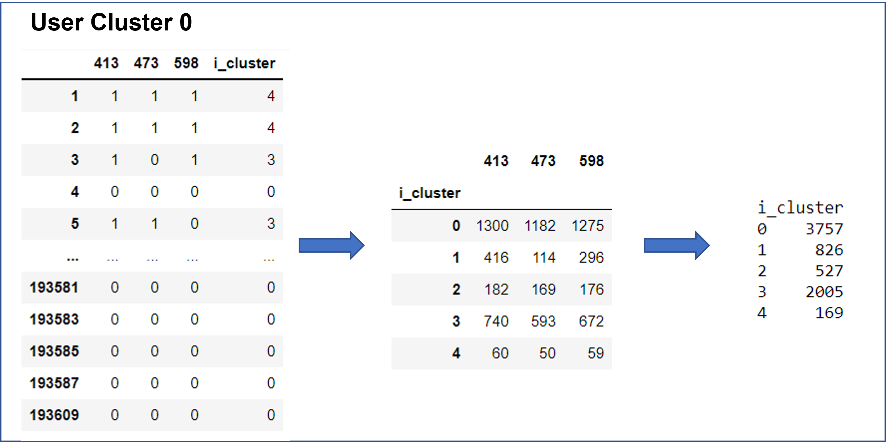
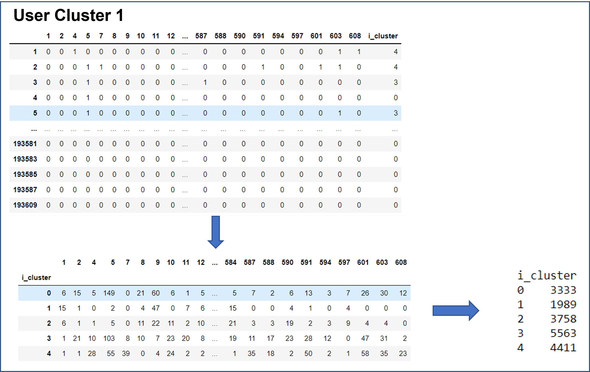
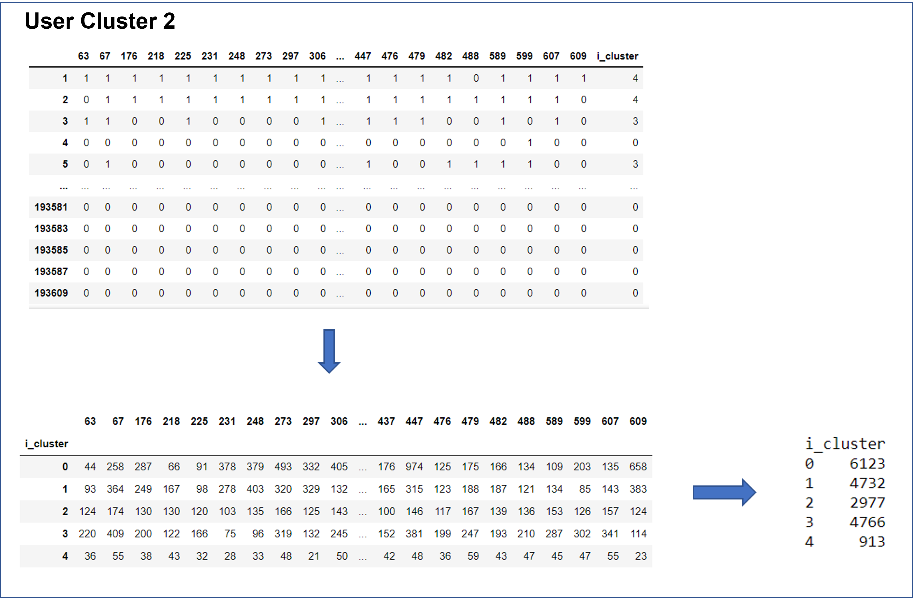
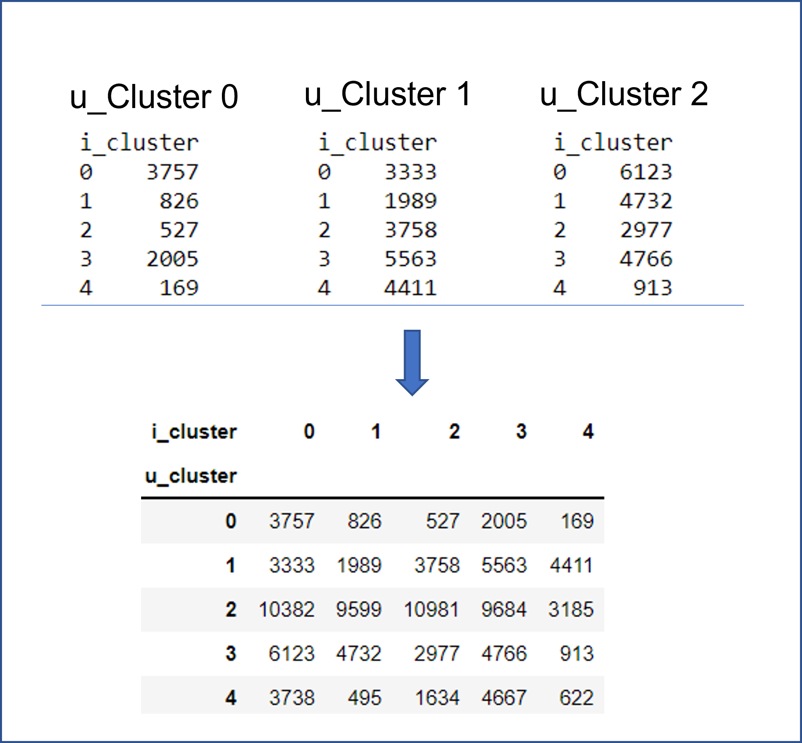

Aggregation¶
def util_mat_agg(df_u, df_i, u_agg='sum', i_agg='sum'):
"""
Aggregates the results of the clustering with respect to item clusters and user clusters.
Parameters
----------
df_u : pandas DataFrame
Dataframe of the user_ids with cluster assignments and
item ratings of users from the original matrix
df_i : pandas DataFrame
Dataframe of the item_ids with cluster assignments and
item ratings of users from the original matrix
u_agg : str
Aggregration method to be used for users through 'sum' or 'mean'
i_agg : str
Aggregration method to be used for items through 'sum' or 'mean'
Returns
-------
util_mat : pandas DataFrame
utility matrix consisting of the aggregrated user
clusters as rows and aggregated item clusters as columns
"""
import numpy as np
import pandas as pd
u_series = df_u['u_cluster']
i_series = df_i['i_cluster']
u_ids = np.unique(u_series.values)
i_ids = np.unique(i_series.values)
u_feats = {}
for u_id in u_ids: #u_ids are clusters of u_id
sub_df = df_u.groupby('u_cluster').get_group(
u_id).drop(columns=['u_cluster']).T
sub_df = sub_df.merge(i_series, left_index=True, right_index=True)
if u_agg == 'sum':
df_grp = sub_df.groupby('i_cluster').sum()
if u_agg == 'mean':
df_grp = sub_df.groupby('i_cluster').mean()
if not isinstance(u_agg,str):
df_grp = sub_df.groupby('i_cluster').apply(u_agg)
if i_agg == 'sum':
df_grp = df_grp.sum(axis=1)
if i_agg == 'mean':
df_grp = df_grp.mean(axis=1)
if not isinstance(i_agg,str):
df_grp = df_grp.apply(i_agg, axis=1)
u_feats[u_id] = df_grp
u_matrix = pd.DataFrame()
for k, v in u_feats.items():
u_matrix = u_matrix.merge(v.rename(k), how='outer',
left_index=True, right_index=True)
util_mat = u_matrix.fillna(0).T
util_mat.index.rename('u_cluster', inplace=True)
return util_mat
util_mat_agg(df_u, df_i, 'mean', 'mean')
| i_cluster | 0 | 1 | 2 | 3 | 4 |
|---|---|---|---|---|---|
| u_cluster | |||||
| 0 | 0.155453 | 0.531532 | 0.944444 | 0.727240 | 0.894180 |
| 1 | 0.001109 | 0.010294 | 0.054167 | 0.016229 | 0.187710 |
| 2 | 0.006609 | 0.095030 | 0.302757 | 0.054039 | 0.259259 |
| 3 | 0.034548 | 0.415233 | 0.727517 | 0.235731 | 0.658730 |
| 4 | 0.027294 | 0.056212 | 0.516762 | 0.298726 | 0.580766 |
Aggregation by sum(or mean):
Users are identified to belong to their respective user clusters. Membership is limited to one user cluster per user.
Within that user cluster, the items rated are identified and labeled with their respective item clusters.
The first step of aggregation is done within each cluster where users are grouped according to the clusters of the items.
The second step is to get the “sum” (“mean”) of each item clusters.
Steps 3 and 4 are repeated for all clusters.
The following diagrams show sample clusters of users, where columns are the users in the cluster and rows are their ratings of the items. For each cluster, steps 3 and 4 are done using “sum” as the method of aggregation.   
The result of step 5 for all clusters are aggregated into a final utility matrix. 
Unit Test¶
import unittest
import pandas as pd
from pandas._testing import assert_frame_equal
import numpy as np
class Test_util_matrix_agg(unittest.TestCase):
def test_util_mat_agg(self):
arru = np.array([[1,1,1,0,1,0,1],[0,0,0,1,1,0,1],[1,1,1,1,1,1,1],[0,1,1,0,0,1,1],[0,1,1,1,1,1,0],
[1,1,1,0,0,0,1],[1,1,0,0,0,1,1]])
df_ut = pd.DataFrame(arru, index=[1,2,3,4,5,6,7])
df_ut['u_cluster'] = [0,0,1,2,0,2,1]
arri = np.transpose(arru)
df_it = pd.DataFrame(arri)
df_it['i_cluster'] = [0,3,1,2,0,2,1]
agg_arr = np.array([[4,4,3,2],[3,3,3,2],[1,4,1,2]])
agg_arr = np.array([[4,4,3,2],[3,3,3,2],[1,4,1,2]])
df_a = pd.DataFrame(agg_arr, index=[0,1,2])
df_a.index.name='u_cluster'
df_a.columns=[0,1,2,3]
umt= util_mat_agg(df_ut, df_it, "sum", "sum")
assert_frame_equal(df_a, umt, check_dtype=True, check_names=False)
unittest.main(argv=[''], verbosity=2, exit=False)
test_util_mat_agg (__main__.Test_util_matrix_agg) ... ok
----------------------------------------------------------------------
Ran 1 test in 0.027s
OK
<unittest.main.TestProgram at 0x7f3aac133f40>